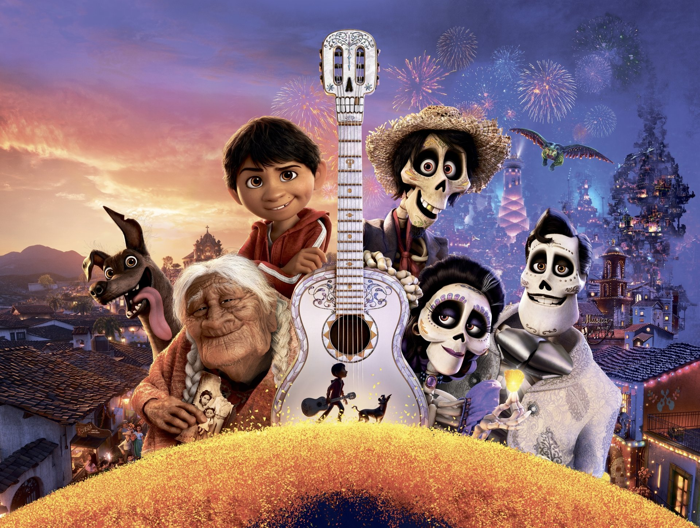

Coco Movie
Click to watchTop 1 Best Animated moralable movie
Coco is a heartwarming animated film by Pixar that beautifully explores family, music, and the Mexican tradition of Día de los Muertos (Day of the Dead). The story follows a young boy named Miguel who dreams of becoming a musician despite his family's ban on music. As he enters the colorful Land of the Dead, he uncovers secrets about his ancestors and learns the true meaning of remembrance and legacy. With stunning animation, emotional depth, and the unforgettable song “Remember Me,” Coco is a touching celebration of culture and family bonds.